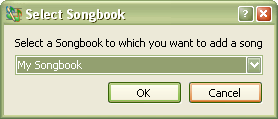

3.1 Adding New Songs
To add a new song:
SoftProjector will allow song to be added only when "Songs" tab in selected.
Shortcut: Crtl+N
 Select a songbook to which you would want to add a new song to. If you do not want to add to any existing songbooks, you may
also add a new songbook. See
"Adding New Songbooks" for detail on adding a new songbook.
See also Editing Songs page for details on Edit Window.
SoftProjector will automatically enter a next song number. If for any reason
the song number that softProjector give, is not the one you do not want to use, you may change it.
You must have a song title for all song. All non-alphanumeric
characters will be removed from the title. This is done so that song searching/filtering
is made
easier.
"Words By" entry field.
"Music By" entry field.
This is the tune/key that this song is sung in.
Song text must be properly
formatted in order not to crash the program and to show the song properly. See
Song Format
for detail.
If you do not want to save changes, click "Cancel" button.
Allow few seconds for song table to reload after clicking "Save" button.